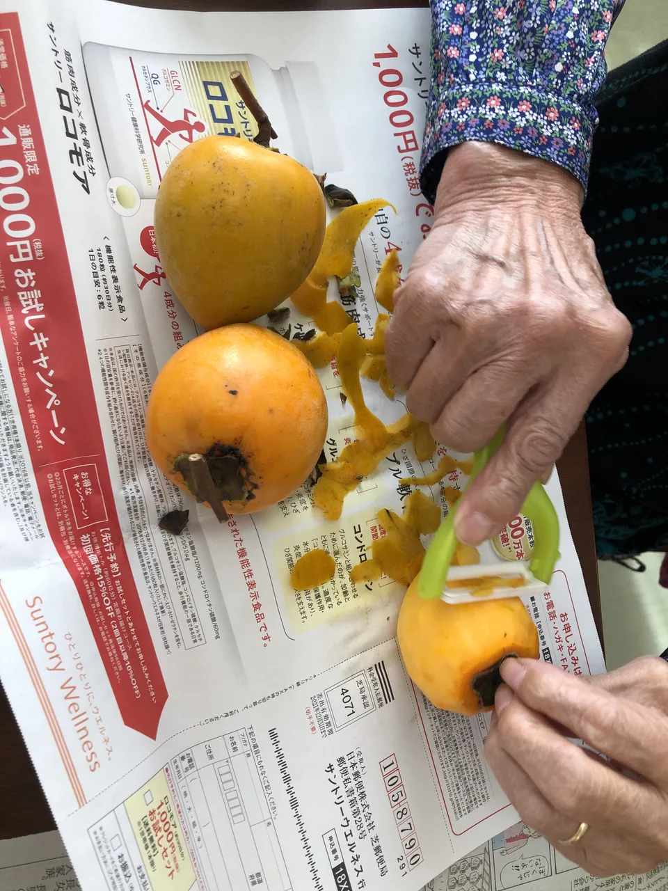
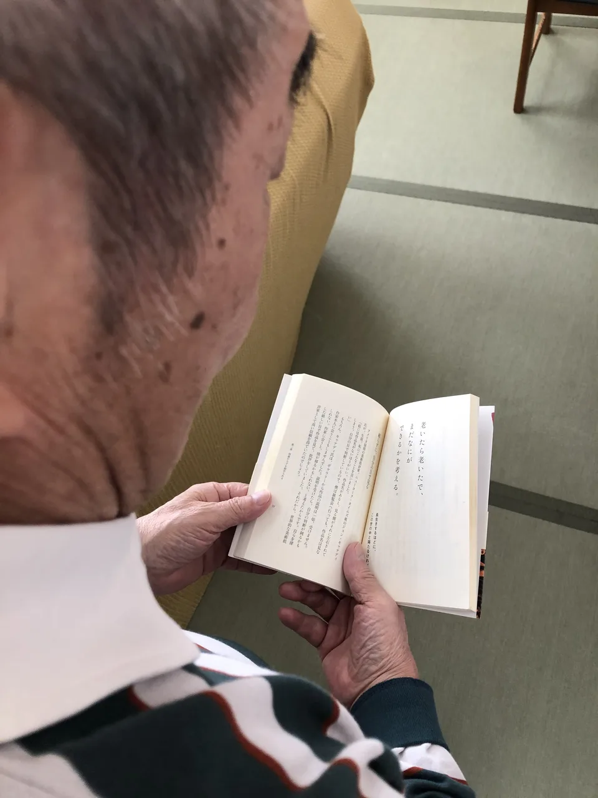
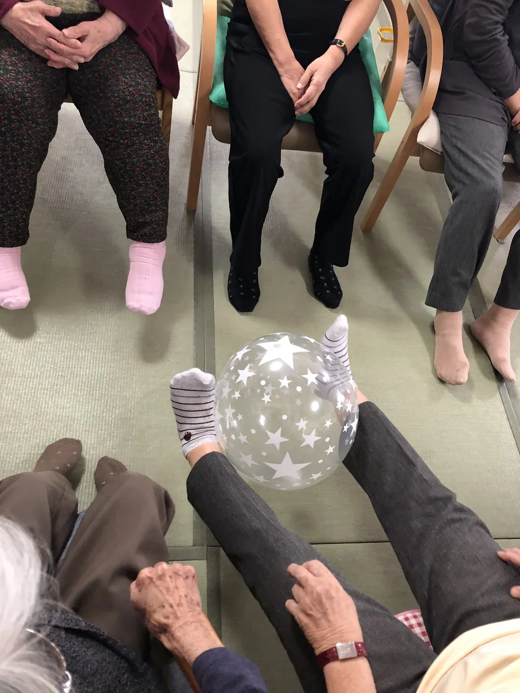
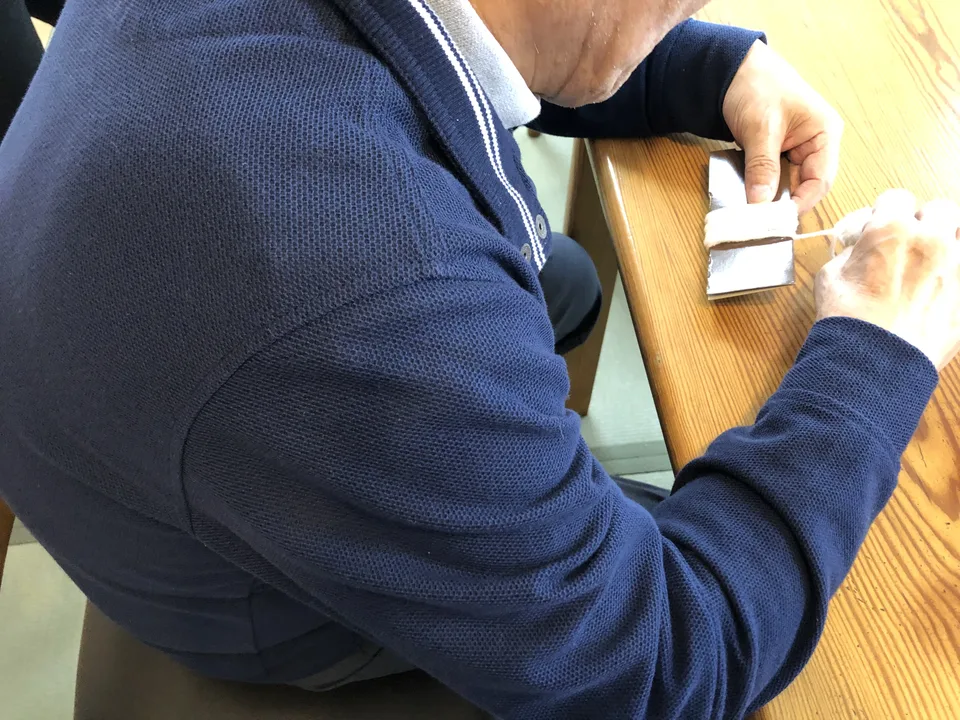

JOURNAL
2020年10月の記事
福泊の活動や日々のできごとを、スタッフがお届けします。

カフェカフェ
記事を読む
秋祭り
記事を読む
スタッフブログ
記事を読む
デイサービス福泊
記事を読む
ながし焼き
記事を読む
柿が欲しい
記事を読む
寒くなってきたらこれ
記事を読む
ご家族さまより
記事を読む毛糸とハサミ
記事を読む毛糸とハサミで
記事を読む
じぶんらしく
記事を読む
けんちゃん
記事を読むWARAKU福泊の日々
運営推進会議
記事を読む
芋掘りリハーサル
記事を読むWARAKU福泊の日々
研修
記事を読む条件に合う記事が見つかりませんでした。
すべての記事一覧へページ番号から探す
月別アーカイブ
2025年3月1件2024年2月2件2024年1月1件2023年12月2件2023年11月1件2023年10月1件2023年9月1件2023年8月2件2023年7月2件2023年6月1件2023年5月2件2023年3月1件2023年2月3件2023年1月4件2022年11月5件2022年10月4件2022年9月3件2022年7月8件2022年6月3件2022年5月5件2022年4月2件2022年3月4件2022年2月3件2022年1月6件2021年11月4件2021年10月5件2021年9月5件2021年7月1件2021年6月7件2021年5月1件2021年4月8件2021年2月6件2021年1月9件2020年12月1件2020年11月2件2020年10月16件2020年9月7件2020年8月2件2020年3月3件2019年12月1件2019年11月8件2019年10月10件2019年9月1件2019年8月12件2019年7月4件2019年6月2件2019年5月1件2019年4月2件2019年3月8件2016年8月1件2016年7月1件2016年1月1件2015年12月1件2015年11月2件2015年10月2件